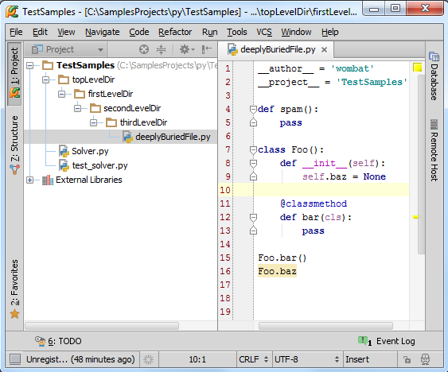
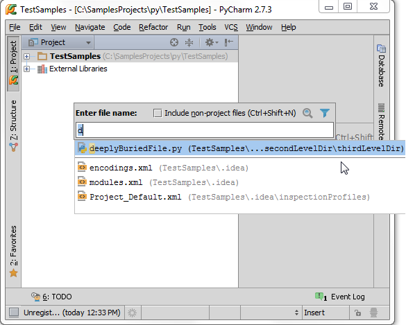
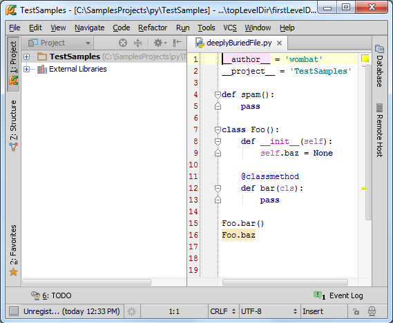
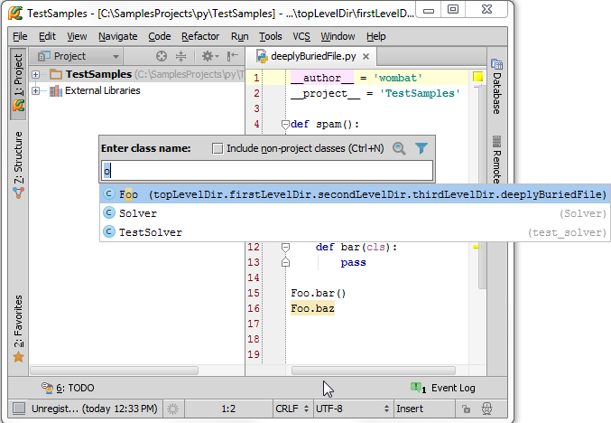
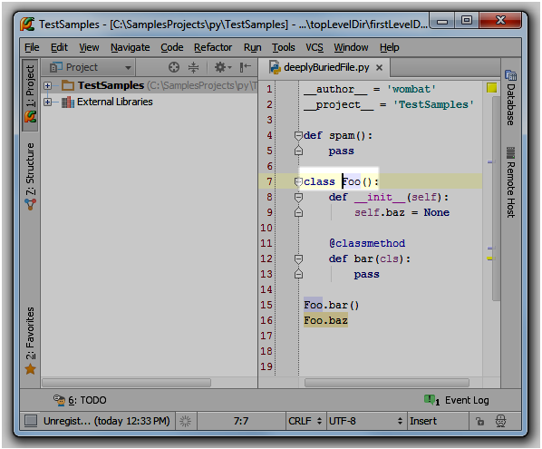
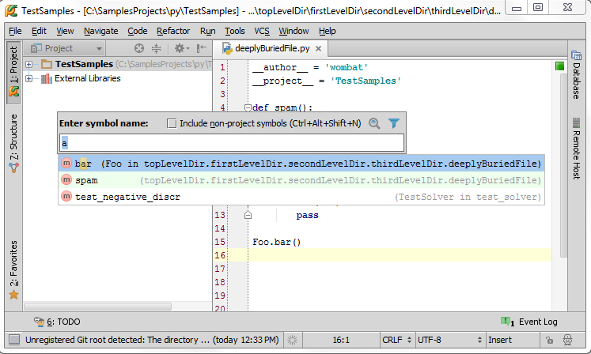
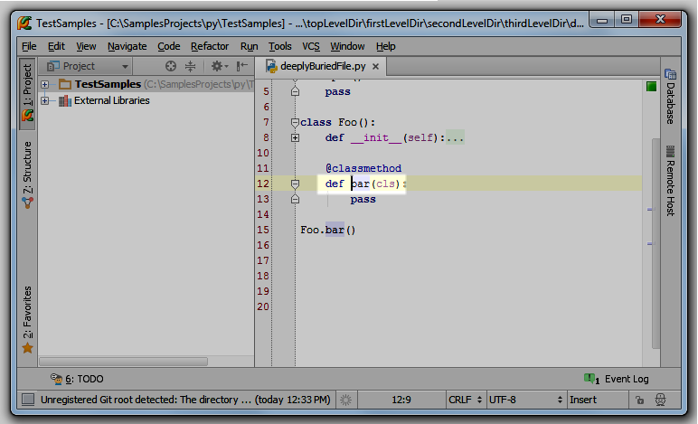
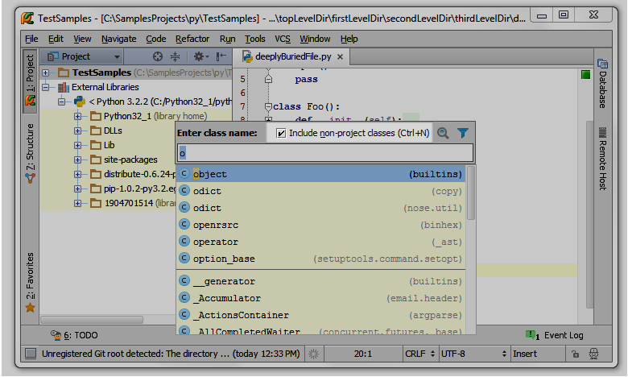
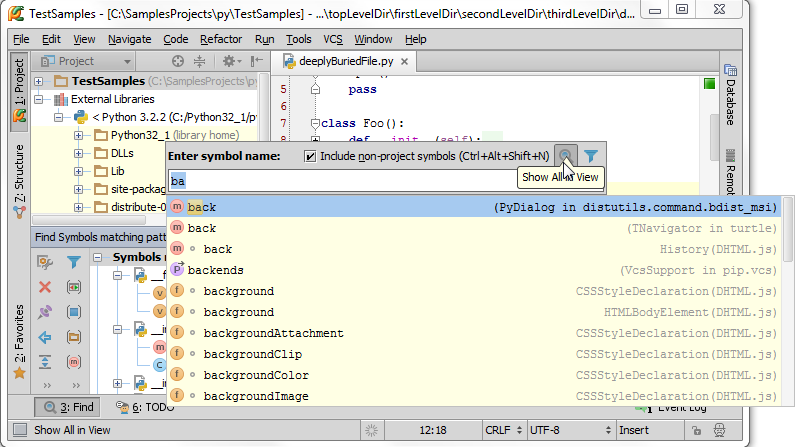
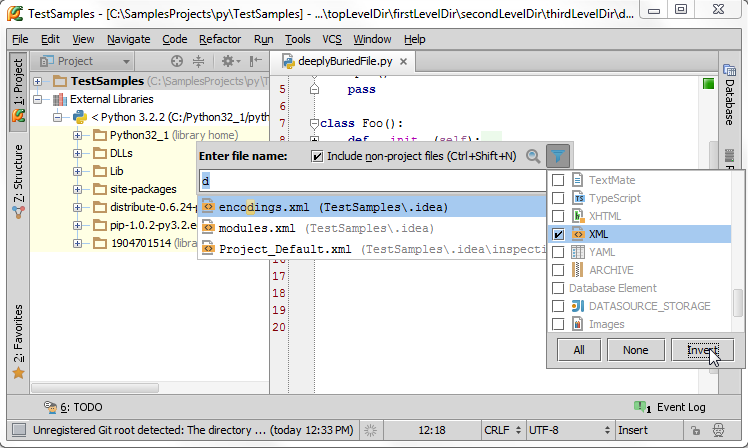

1、准备一个工程
向你的工程中添加一个Python文件，并输入一些源码，例如：

2、转到对应文件、类、符号
Pycharm提供的一个很强力的功能就是能够根据名称跳转到任何文件、类、符号所在定义位置。
3、跳转到文件
按下Ctrl+Shift+N快捷键，在弹出的窗口中输入d：

下面所显示的下拉列表中包含了所有名称中有字母d的文件。这里选择deeplyBuriedFile.py，回车，打开对应的deeplyBuriedFile.py文件：

4、跳转到类
接下来我们尝试跳转到一个特定的类定义。按下Ctrl+N，输入o，注意这里你可以输入*来代表所有的文件名。在下拉列表中列出了所有名字中包含字母o的类，并且给出了对应的全路径：

选择提示列表中的Foo，回车，这次会在光标所在的类声明处打开所在文件：

5、跳转到符号
接下来我们尝试跳转到类中一个特定的成员处。按下Ctrl+Alt+Shift+N，输入a：

选择bar，然后回车，转到对应定义：

6、跳转窗口的额外功能
你可能注意到所弹出的窗口中还有其他控件为我们提供额外功能。
首先，我们介绍如何跳转到当前工程之外的文件、类、符号处。勾选Include non-project files/classes/symbols复选框或者按下相关快捷键以打开外部提示列表。与之前的suggestion list不同的是这个列表包含了外部库中的相应的符合搜索条件的项目：

接下来拟可以在一个独立的窗口 Find tool window来显示当前多匹配的条目，当你在进行多重搜索时，这种独立的显示模式变得很重要。同时我们也希望能够保存搜索结果方便下次查看：

最后，你可以通过单击提示列表旁边的漏斗图标来指定当前需要显示哪种文件类型的搜索结果：
